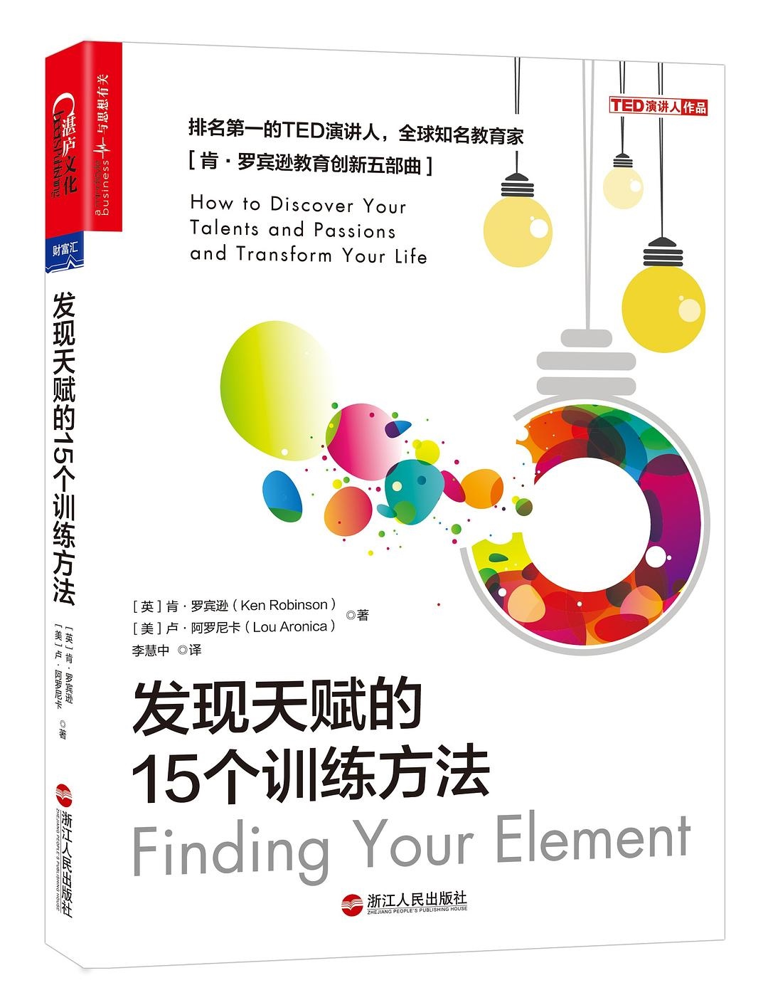

作者: [英]肯·罗宾逊 / [美]卢·阿罗尼卡
出版社: 浙江人民出版社
原作名: Finding Your Element
译者: 李慧中
出版年: 2017-8-30
豆瓣评分：7.3
- 每个人都有自己独一无二的天赋。发现天赋的第一步，是要认清并了解自己的天赋所在。发现天赋并非无章可循，本书将通过科学有效的训练，带领读者走上自身天赋的探寻之路！
- 全书精心编排六大板块，助你发现自己真正的天赋！
- 在作者看来，发现自身天赋需要我们挖掘自己的天分，感受自己的热情，端正自己的态度，寻找自己的“部落”，这些对于我们提升幸福感有着举足轻重的作用。
目录
推荐序 做教育创新真正的引领者
前 言 从“思考人生”走向“创造人生”
第1章 发现天赋
我的天赋是如何被发现的
发现天赋的3个步骤
发现天赋的3大原则
确定自己的人生方向
训练方法1冥 想
训练方法2评估“现在的你”
训练方法3描述自己
第2章 你擅长什么
天资与能力
发现自己天资的4种测试
你有多少种选择
换个角度试一试
训练方法4 你擅长什么？
第3章 如何发掘你的天赋
网站设计师是如何成为魔术师的
突破教育的阻碍
专注
做真正的自己
训练方法5：如何发现你的天资？
训练方法 6：挖掘你的天资
第4章 你的最爱是什么
感受热情
身体能量和心灵能量
忠于心灵
积极情绪的力量
训练方法7：你喜欢什么？
训练方法8：什么会吸引你？
第5章 什么会让你觉得幸福
不幸福的真相
幸福的意义
提高幸福指数的3大要素
超越自我
训练方法9：你幸福吗？
训练方法10：幸福圆圈
第6章 你的态度是什么
你的水杯有多满
冲破障碍
改变你的思维模式
改变他人的态度
训练方法11：你是如何看待事物的？
第7章 你的现在是不是你的未来
走出去
你的处境如何
关一扇门，开一扇窗
你想去哪里
训练方法12：你现在在哪里？
第8章 你的“部落”在哪里
“部落”文化
“部落”的4大好处：肯定、指引、合作和鼓舞
做不同的尝试
找到你自己的“部落”
训练方法13：想象你的“部落”
第9章 接下来你该怎么做
以退为进
听从内心的召唤
也许，唯一的选择就是最好的选择
可塑的人生
训练方法14： 你的初始行动计划
训练方法 15给支持者的一封信
结 语 让我们过有热情、有目标的生活吧！
译者后记
· · · · · ·